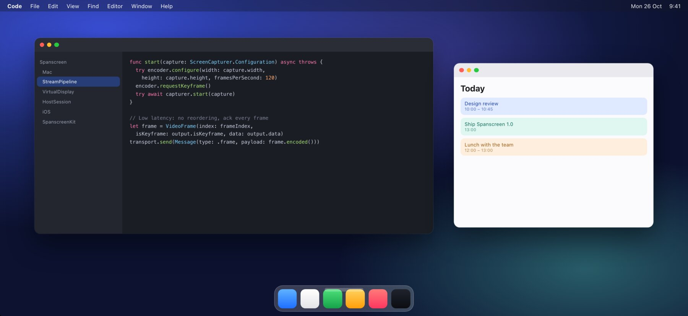

Extend or mirror your Mac to iPhone and iPad over Wi-Fi or a USB cable. Built for iPhone Duo. Free and open source.
Signed and notarized by Codext GmbH. No account, no tracking.

A real display for macOS. Drag windows over, arrange it in System Settings, or mirror your main screen.
Same network, peer-to-peer without a network, or USB for the lowest latency. It switches to the cable when you plug in.
The display matches your iPhone pixel for pixel. Choose larger text or more space with one slider.
Fold or unfold and your Mac follows: the cover screen and the large inner screen each get their native resolution.
Tap to click, hold to right-click, scroll with two fingers. Or turn your iPhone into a trackpad.
Hardware HEVC on both ends, no buffering, adaptive bitrate. Up to 120 Hz on ProMotion iPhones.
Open the DMG, drag Spanscreen to Applications and open it. It lives in your menu bar.
Spanscreen needs them to show the display on your iPhone and to click with touch.
Use the same Wi-Fi or plug in the cable, then choose your iPhone in the menu bar. Next time it connects by itself.